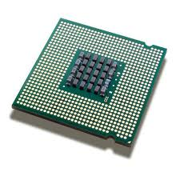

Fourth Generation (1971-Present)
The fourth generation computers are marked by the use of microprocessors. These microprocessors use Very Large Scale Integration (VLSI) technology. This technology enables creating an integrated circuit (IC) by combining thousands of transistors into a single chip. It has brought a major revolution in the history of computers. Because of this technology; computers have become compact; powerful and affordable. Today's personal computers (PCs) are the result of this technology.

Advantages
These computers are the cheapest of all earlier generation computers.
They are smaller in size as compared to the computers of earlier generation.
They work at a very high speed and are more accurate and reliable than the computers of earlier generation.
They have and extremely large memory.
They do not require cooling.
Disadvantages
Microprocessors have limitations on the size of data.